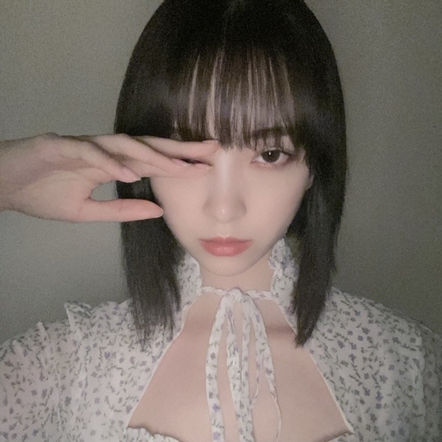

2020/0717Friワタわた
ちょっとダークなメイクをして
自撮りしてみました
フィルムっぽくあらい画質に
フラッシュをたいて。



色味を変えて。
良かったら拡散してください♡
評判良かったら次のブログにも
まだあげてない写真あげちゃおうかな、
おすすめのゲーム教えてくださり
ありがとうございました！
闘う系 ホラー系が好きなので
参考にさせていただきます^ - ^
雨やけど雨に負けずがんばろー！
ではは
2020/07/17 13:52
コメント(285)
ブログ更新ありがとう！
可愛いワンピースにダークなメイクすごく似合ってる…！
未央奈ちゃん目に力があるというか視線が印象的だから、ダークなメイクをすると外国の女優さんみたいなオーラをまとった人になる気がする…素敵⸜(*ˊᵕˋ*)⸝
ティアラはフィルターなのかな？それもすごく似合ってて可愛い！
拡散するね！
雨に負けず頑張ろう〜︎☺︎
可愛いワンピースにダークなメイクすごく似合ってる…！
未央奈ちゃん目に力があるというか視線が印象的だから、ダークなメイクをすると外国の女優さんみたいなオーラをまとった人になる気がする…素敵⸜(*ˊᵕˋ*)⸝
ティアラはフィルターなのかな？それもすごく似合ってて可愛い！
拡散するね！
雨に負けず頑張ろう〜︎☺︎
堀ちゃん、いろんな写真ありがとう！！
いろんな表情が見れるのがうれしいです！！
もっといろんな堀ちゃんが見たい！！
いろんな表情が見れるのがうれしいです！！
もっといろんな堀ちゃんが見たい！！
堀ちゃんブログ更新ありがとう！
ダークなメイクが美しさとかっこよさ
がどっちもあって良い自撮りだと思いました〜
そういえば乃木坂ドリームバイト
毎週見てます！
改めてショートも似合ってるな〜って
思いました
お仕事頑張ってください！！
次のブログも楽しみにしてます
ダークなメイクが美しさとかっこよさ
がどっちもあって良い自撮りだと思いました〜
そういえば乃木坂ドリームバイト
毎週見てます！
改めてショートも似合ってるな〜って
思いました
お仕事頑張ってください！！
次のブログも楽しみにしてます
影廊やってほちぃのだァ〜！
あとは10年前の作品だけどwiiのイケニエノヨルっていうゲームかなァ〜
あとは10年前の作品だけどwiiのイケニエノヨルっていうゲームかなァ〜
未央奈ブログ更新ありがとう！
ダークなメイクかっこいいね。さすがメイクの研究熱心。
この服襟が独特でオシャレだね。ティアラも可愛い。今日のモバメの写真も可愛かったよ。
僕は全然ゲームやらないからゲームのことわからないのよね。助けになれずにごめん。
では！
ダークなメイクかっこいいね。さすがメイクの研究熱心。
この服襟が独特でオシャレだね。ティアラも可愛い。今日のモバメの写真も可愛かったよ。
僕は全然ゲームやらないからゲームのことわからないのよね。助けになれずにごめん。
では！
顔が整っているから、黒髪の方がミステリアスな美人感ハンパないね！黒髪正解！
未央奈さん、こんばんは
ダークメイク格好いいです
ティアラもよく似合っていて
ギャップがいい感じですよ～
最近、サマーセーター着てる女性
見かけなくなったなぁ
またコメントしますね
ダークメイク格好いいです
ティアラもよく似合っていて
ギャップがいい感じですよ～
最近、サマーセーター着てる女性
見かけなくなったなぁ
またコメントしますね
ブログありがとう！
ダークメイクもいいですね！いろんなメイクが似合ってて本当に凄いですね！
雨でもお互いに頑張りましょー
ダークメイクもいいですね！いろんなメイクが似合ってて本当に凄いですね！
雨でもお互いに頑張りましょー
堀ちゃんのダークメイクめっちゃ好き！
BLACKPINKのリサに似てる！！
BLACKPINKのリサに似てる！！
なんか未央奈がブログ更新するたびに
写真が早く見たくなる
写真が早く見たくなる
ブログとモバメありがとう！！
そういえば！堀ちゃんってアベンジャーズって映画見た事ある？？
マーベル映画、最高だよ！
そういえば！堀ちゃんってアベンジャーズって映画見た事ある？？
マーベル映画、最高だよ！
かわいいすぎ！ダーク系もっとやってほしい
 ら
ら

出遅れた感あるけど、PS4だとデットバイデイライトおすすめです！本田翼さんや狩野英孝さんがゲーム実況されてます！僕もハマってしまいました笑 ダウンロード専用ゲームです
未央奈ちゃん、ブログ更新ありがとう！
ダークメイクいい感じだとは思うけど、いつものキラキラ未央奈ちゃんの方が圧倒的に好き！
体調には気をつけてね。
ダークメイクいい感じだとは思うけど、いつものキラキラ未央奈ちゃんの方が圧倒的に好き！
体調には気をつけてね。
ブログ更新ありがとうございます〜
ダークなメイクも似合うね、特に二枚目はかっこよがた
新しい未央奈ちゃんが見えました
ダークなメイクも似合うね、特に二枚目はかっこよがた
新しい未央奈ちゃんが見えました
メイクと写真の撮り方で、とてもミステリアスな雰囲気が出てて素敵です。
雨にも負けず頑張りましょう！
雨にも負けず頑張りましょう！
前に久保ちゃんが言ってたのかな？目の角度が好きっていうの、すげーーわかる！とってもきれいな目だと思います。メイクが映えまくる。
ブログのタイトル「ワロタ」かとオモタ
みおな☆★☆タンポポだけども～♪♪♪
Σ(゜Д゜)
好き好きーーーーーーーーー！！！！！！！
ダークな感じもいい！！
どっかの国のお姫様っぽい！！
あー、好きなんです♪♪♪
『みおなはタンポポの人生のキキだよ！！タンポポはジジだよ！！』
みおな猫アレルギーやけどな！！
(*≧∀≦*)
タンポポより。ありがとう
ダークな未央奈めっちゃ可愛いですよ！！
未央奈ちゃん、おつかれさまっ！
ダークみおな、かわいい！
でも夜中に出会ったら怖いかも！
2nd写真集、セブンネットで買ったんだ～！
でもパネル展あるから行こうかな～！
むし暑い日々だね！
体調に気をつけてね！
応援してます！！
ダークみおな、かわいい！
でも夜中に出会ったら怖いかも！
2nd写真集、セブンネットで買ったんだ～！
でもパネル展あるから行こうかな～！
むし暑い日々だね！
体調に気をつけてね！
応援してます！！
好き
未央奈！
お洒落な感じというか、カッコいい！
雨にも負けず、風にも負けずだね！笑
では
お洒落な感じというか、カッコいい！
雨にも負けず、風にも負けずだね！笑
では
可愛い！
お疲れ様です。
悪そうな未央奈ちゃんだなぁ。
こういう人に騙されてみたいもんです。
うーん悪大人。
でも細くて可愛い。
悪そうな未央奈ちゃんだなぁ。
こういう人に騙されてみたいもんです。
うーん悪大人。
でも細くて可愛い。
こんにちは‼︎
ブログ更新、ありがとうございます♪
ダークな感じのメイクもいいですね‼︎
衣装の雰囲気も相まって、ホラーとかサスペンスの映画のポスターみたい♪
1つ前のブログの写真では、タオルケットにくるまっている未央奈を、ぽわぽわカメラで撮っていて。
見ているだけでほっこりする、癒され系の写真♪
服装やメイク、カメラのちょっとした機能で、随分雰囲気が変わりますね‼︎
そうそう、昨日の『のぎおび』、観ましたよ♪
ショートカットの未央奈、めっちゃ可愛かった…‼︎
未央奈にとって、30分ののぎおびは短過ぎますね♪
45分拡大版でもいいぐらい(笑)。
のぎおぎでも、焚き火の音が好きって話をしてましたね♪
その気持ち、よく分かります…‼︎
別に暖炉がある家に住んだことはないんだけど(笑)、あの音を聞くと、なんか安心するんですよね。
緊張感から解放されて、気持ちがほどけていく感じ♪
あ、そうだ、暖炉といえば…
飛行石の隠し場所ですね(笑)。
自分が一番好きなジブリ作品は『天空の城 ラピュタ』です‼︎
あと、ジブリ作品と言っていいのか分からないけど、『カリオストロの城』も好きだなあ。
どちらもお姫様を助け出すお話だから、ヒーロー願望が強いのかも(笑)。
未央奈のオリジナル占いの結果も気になる…‼︎
機会があれば、教えていただけると嬉しいです♪
あ、あと、自分が以前コメントしたことで、ちょっと言葉足らずだったかなあと思っていることがあって。
以前、ブログで『挑戦』と『安定』について書いていたことがあったと思うんだけど…
自分は、それがどのような選択であっても、未央奈の選択を尊重するし、応援し続けますよ‼︎
それともう1つ。
『挑戦』と『安定』は、二者択一であるとは限りません。
『安定』を確保しつつ、『挑戦』する選択肢がある場合もあります。
ただそれは、いい所取りという訳ではありません。
むしろ、それが最も険しい道だったりします。
有名大学に通いながら、オリンピックで金メダルを狙うアスリート。
会社に勤めながら、難関国家試験に挑むビジネスマン。
芸能活動と学業を両立させる芸能人。
犠牲にするものも多いだろうし、『挑戦』と『安定』の二兎を追うのは簡単ではないと思います。
いずれにしろ、何か選択をする際には、第三の道もあるか否かも十分に検討した上で、判断した方がいいと思います‼︎
ではでは、また。
明日も未央奈にとっていい1日になりますように♪
ブログ更新、ありがとうございます♪
ダークな感じのメイクもいいですね‼︎
衣装の雰囲気も相まって、ホラーとかサスペンスの映画のポスターみたい♪
1つ前のブログの写真では、タオルケットにくるまっている未央奈を、ぽわぽわカメラで撮っていて。
見ているだけでほっこりする、癒され系の写真♪
服装やメイク、カメラのちょっとした機能で、随分雰囲気が変わりますね‼︎
そうそう、昨日の『のぎおび』、観ましたよ♪
ショートカットの未央奈、めっちゃ可愛かった…‼︎
未央奈にとって、30分ののぎおびは短過ぎますね♪
45分拡大版でもいいぐらい(笑)。
のぎおぎでも、焚き火の音が好きって話をしてましたね♪
その気持ち、よく分かります…‼︎
別に暖炉がある家に住んだことはないんだけど(笑)、あの音を聞くと、なんか安心するんですよね。
緊張感から解放されて、気持ちがほどけていく感じ♪
あ、そうだ、暖炉といえば…
飛行石の隠し場所ですね(笑)。
自分が一番好きなジブリ作品は『天空の城 ラピュタ』です‼︎
あと、ジブリ作品と言っていいのか分からないけど、『カリオストロの城』も好きだなあ。
どちらもお姫様を助け出すお話だから、ヒーロー願望が強いのかも(笑)。
未央奈のオリジナル占いの結果も気になる…‼︎
機会があれば、教えていただけると嬉しいです♪
あ、あと、自分が以前コメントしたことで、ちょっと言葉足らずだったかなあと思っていることがあって。
以前、ブログで『挑戦』と『安定』について書いていたことがあったと思うんだけど…
自分は、それがどのような選択であっても、未央奈の選択を尊重するし、応援し続けますよ‼︎
それともう1つ。
『挑戦』と『安定』は、二者択一であるとは限りません。
『安定』を確保しつつ、『挑戦』する選択肢がある場合もあります。
ただそれは、いい所取りという訳ではありません。
むしろ、それが最も険しい道だったりします。
有名大学に通いながら、オリンピックで金メダルを狙うアスリート。
会社に勤めながら、難関国家試験に挑むビジネスマン。
芸能活動と学業を両立させる芸能人。
犠牲にするものも多いだろうし、『挑戦』と『安定』の二兎を追うのは簡単ではないと思います。
いずれにしろ、何か選択をする際には、第三の道もあるか否かも十分に検討した上で、判断した方がいいと思います‼︎
ではでは、また。
明日も未央奈にとっていい1日になりますように♪
どうも～
ダーク未央奈ちゃん、可愛い！
バットマンに出てくる系の悪女感。笑
夜中に写真送られてきたらびっくりだわ～
パネル展行きたいんだけども、雨だからな
いつ降るか分からない天気でもあるからね
なんなら晴れの日行きます！
7月で梅雨だけど涼しいね
ダーク未央奈ちゃん、可愛い！
バットマンに出てくる系の悪女感。笑
夜中に写真送られてきたらびっくりだわ～
パネル展行きたいんだけども、雨だからな
いつ降るか分からない天気でもあるからね
なんなら晴れの日行きます！
7月で梅雨だけど涼しいね
みおたんきゃわたん♡♡♡
こんばんみーお♪
ん！？呼んだ？？笑
ブログありがとう！
今、仕事帰りで、コメント遅いけど
拡散は速攻でしといたよ〜☆
いろいろ考えていてアートだね♪
アート驚く為五郎〜♪
これ、わかる？
元ネタがわからんかぁ〜
まぁ、気にせんとちひろ〜
いわさきちひろ は、
わかるよね？
良きだよね〜♪
なんか、脱線しているなぁ〜
脱線ゴレライ♪
。。。。
キリがないなぁ〜笑
心太
お薦めのゲームは、
川のぬし釣り2
フィッシュ・アイズ
夜想曲
の3本！！
まぁ、今はなかなか
出来ないやろけど。。。
古すぎて(小声)
。。。。
とりあえず、
今、東京はコロナがヤバヤバ矢場とんやけど
感染しないように気をつけてね！
ほんまやで！
ほな
またね☆
わたる⊿
ん！？呼んだ？？笑
ブログありがとう！
今、仕事帰りで、コメント遅いけど
拡散は速攻でしといたよ〜☆
いろいろ考えていてアートだね♪
アート驚く為五郎〜♪
これ、わかる？
元ネタがわからんかぁ〜
まぁ、気にせんとちひろ〜
いわさきちひろ は、
わかるよね？
良きだよね〜♪
なんか、脱線しているなぁ〜
脱線ゴレライ♪
。。。。
キリがないなぁ〜笑
心太
お薦めのゲームは、
川のぬし釣り2
フィッシュ・アイズ
夜想曲
の3本！！
まぁ、今はなかなか
出来ないやろけど。。。
古すぎて(小声)
。。。。
とりあえず、
今、東京はコロナがヤバヤバ矢場とんやけど
感染しないように気をつけてね！
ほんまやで！
ほな
またね☆
わたる⊿
最後の写真、フィルム感がよく出てますね！
こんなフィルターもあるんだなぁ。
良い感じです♪☆
こんなフィルターもあるんだなぁ。
良い感じです♪☆
人形みたいや
かわかわ
かわかわ
堀さんいつか
ナイトメアビフォアクリスマスのサリーの
コスプレお願いします(既にしてたらすみません
絶対似合います。
ナイトメアビフォアクリスマスのサリーの
コスプレお願いします(既にしてたらすみません
絶対似合います。
堀ちゃんブログ更新ありがと ！
ゲームとかよく知らないから答えられなかった…ごめんね！
さすが…今日のメイクとっても可愛いです(*ฅ́˘ฅ̀*)♡
梅雨早く空けるといいねー！
ゲームとかよく知らないから答えられなかった…ごめんね！
さすが…今日のメイクとっても可愛いです(*ฅ́˘ฅ̀*)♡
梅雨早く空けるといいねー！
更新早すぎありがとうございます
ダークメイクくそかっこいい
チークそこまで明るくせずに涙袋ちょっと濃い目に入れるのが特徴なんかな

僕男だけど堀さんのメイクよく変えててすげー好きだからこれからも色々なのみたいなぁ
韓国風メイク？かな？この前までやってたのも結構好きだったのに辞めちゃったの悲しかったなぁ
また見せてね
これからも様々な堀さんに会えるのを楽しみにしてるので色々なメイク挑戦してくださいね
ダークメイクくそかっこいい
チークそこまで明るくせずに涙袋ちょっと濃い目に入れるのが特徴なんかな
僕男だけど堀さんのメイクよく変えててすげー好きだからこれからも色々なのみたいなぁ
韓国風メイク？かな？この前までやってたのも結構好きだったのに辞めちゃったの悲しかったなぁ
また見せてね
これからも様々な堀さんに会えるのを楽しみにしてるので色々なメイク挑戦してくださいね
堀ちゃんってKーPOPアイドルにいそうなルックスしてるよね^^*最近のメイクだとブルピンのリサとかに似てるしすごい好き！
こんばんは
ダークメイク新鮮です♪
画質も雰囲気ありますし、
作画風なイメージですね☆
お洋服が可愛いらしいので、
ツンデレなイメージですよ✨
ホラーとっても怖がりなのに、
ホラー好きもギャップ萌えです✌
まだ見た事ない写真も楽しみです♡☺
ダークメイク新鮮です♪
画質も雰囲気ありますし、
作画風なイメージですね☆
お洋服が可愛いらしいので、
ツンデレなイメージですよ✨
ホラーとっても怖がりなのに、
ホラー好きもギャップ萌えです✌
まだ見た事ない写真も楽しみです♡☺
目が大きいから、羨ましいです☺️
可愛いとしか言いようがない❗
素敵❗
可愛いとしか言いようがない❗
素敵❗
未央奈さん、今日の写真とっても素敵です！
ダークメイク、未央奈さんのメイクで1番好きかも。すごく綺麗です。少し妖しい感じがなんとも言えん。
お洋服も似合っていて可愛いです。
ダークメイク、未央奈さんのメイクで1番好きかも。すごく綺麗です。少し妖しい感じがなんとも言えん。
お洋服も似合っていて可愛いです。
ブログ更新ありがとう。
ダークな感じかっこいいし可愛い。
写真拡散させていただきます。
ダークな感じかっこいいし可愛い。
写真拡散させていただきます。
未央奈ちゃんダークなメイクも可愛いです！
明るいメイクと一緒にのせて欲しいですね
最近は雨ばかりで気持ちが沈むけど気落ちしないように
がんばろー！
じゃあ、またねー
明るいメイクと一緒にのせて欲しいですね
最近は雨ばかりで気持ちが沈むけど気落ちしないように
がんばろー！
じゃあ、またねー
堀ちゃん更新ありがとう！
いつも楽しみにみてます。
東京もコロナで大変だと思いますが
頑張って下さい
ゲームなんですが
断然デッドバイデイライトが、お勧めです。
やってるひとも多いし。
また更新楽しみにしています！
いつも楽しみにみてます。
東京もコロナで大変だと思いますが
頑張って下さい
ゲームなんですが
断然デッドバイデイライトが、お勧めです。
やってるひとも多いし。
また更新楽しみにしています！
お姫様抱っこ
未央奈ちゃん ブログ更新ありがとう
ダークな写真もお洒落だよー！私はとても好きです。特にティアラの写真？めっちゃ好き！未公開写真も待ってるね 未央奈ちゃんも頑張ってるんだって思うと自然と私も頑張れます。いつもありがとう！体調には気をつけてね。今日も大好きです。
未央奈ちゃんも頑張ってるんだって思うと自然と私も頑張れます。いつもありがとう！体調には気をつけてね。今日も大好きです。
ダークな写真もお洒落だよー！私はとても好きです。特にティアラの写真？めっちゃ好き！未公開写真も待ってるね
更新ありがとう( ^o^)ノ
ダークイメージメイク、凄くいい
何か淡々と恐ろしい言葉を投げ掛けてほしい
ダークイメージメイク、凄くいい
何か淡々と恐ろしい言葉を投げ掛けてほしい
更新待ってました〜！
昨日でインスタ未央奈ちゃんからの投稿は
終わっちゃったね…ちょっと寂しい
ダークな感じめっちゃ好き
次の更新も待ってます
昨日でインスタ未央奈ちゃんからの投稿は
終わっちゃったね…ちょっと寂しい
ダークな感じめっちゃ好き
次の更新も待ってます
えっ、どこのお姫様？
可愛すぎる～
可愛すぎる～
是非ダークソウルなどのソウルシリーズをプレイして欲しいですね。
ブログ更新ありがとう
戦う系 ホラー系って
ちょっと意外だった
写真もっと載せて
楽しみでーす
戦う系 ホラー系って
ちょっと意外だった
写真もっと載せて
楽しみでーす
更新早すぎありがとうございます
ダークメイクくそかっこいい
チークそこまで明るくせずに涙袋ちょっと濃い目に入れるのが特徴なんかな
僕男だけど堀さんのメイクよく変えててすげー好きだからこれからも色々なのみたいなぁ
韓国風メイク？かな？この前までやってたのも結構好きだったのに辞めちゃったの悲しかったなぁ
また見せてね
これからも様々な堀さんに会えるのを楽しみにしてるので色々なメイク挑戦してくださいね
ダークメイクくそかっこいい
チークそこまで明るくせずに涙袋ちょっと濃い目に入れるのが特徴なんかな
僕男だけど堀さんのメイクよく変えててすげー好きだからこれからも色々なのみたいなぁ
韓国風メイク？かな？この前までやってたのも結構好きだったのに辞めちゃったの悲しかったなぁ
また見せてね
これからも様々な堀さんに会えるのを楽しみにしてるので色々なメイク挑戦してくださいね


４連休中に拝見します。